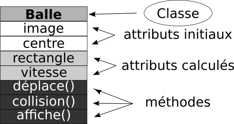

Bases de Pygame
Ce cours est très largement et assez honteusement copié sur celui-ci. Merci à vous ! En cas de soucis de droits, n'hésitez pas à me contacter par le lien situé en bas de page !
Importer Pygame et ses constantes
Pygame est une bibliothèque, et en tant que telle, elle est construite à partir de plusieurs modules. Les noms de ces modules sont :
- display
- mixer
- draw
- event
- image
- mouse
- time
Il existe alors plusieurs possibilités pour importe pygame
-
Importation complète :
import pygameLa totalité de la bibliothèque est alors importée, et pour utiliser la fonction
updatedu moduledisplayon devra alors utiliserpygame.display.update(). -
Importation partielle des modules nécessaires :
from pygame import displaySeul le module display est alors importé, et pour utiliser la fonction
updatede ce module, on devra alors utiliserdisplay.update(). -
Importation complète avec import des constantes directement dans l'espace de nommage (conseillée) :
import pygame from pygame.locals import *Dans ce cas, pour utiliser la constante représentant la touche espace, au lieu d'utiliser
pygame.locals.K_SPACE, on utilisera simplementK_SPACE.Création d'une fenêtre graphique et boucle d'évènements
Le projet
Commençons un petit programme qui nous amènera à déplacer un personnage de gauche à droite sur un fond d'écran, pendant que des balles tombent depuis le haut de l'écran à différentes vitesses. Le jeu consistera à éviter que le personnage entre en collision avec les balles, et s'arrêtera dès qu'une collision aura lieu.
Le premier point est d'afficher une fenêtre graphique d'une dimension donnée : \(640 \times 480~ pixels^2\) (oui, en bon prof de maths, je respecte à minima les unités...).
On utilise le script suivant, dans un fichier nommé dodgeTheBall.py :
1 2 3 4 5 6 | |
Analysons le code
- Dans les deux premières lignes, nous importons
pygameen totalité ainsi que les constantes spécifiques dans l'espace de nommage courant. - En ligne 4, nous initialisons tous les modules de
pygame. - En ligne 6, nous appelons ensuite la fonction
set_mode()contenue dans le moduledisplaydepygame, qui prend en argument un tuple contenant la largeur et la hauteur de la fenêtre voulue (attention, c'est bien un tuple !pygame.display.set_mode(640, 480)ne fonctionne pas !).
Y'a un bug !
La fenêtre reste bloquée et ne se ferme pas sauf si on force l'arrêt du script !
Effectivement, on se retrouve bloqué... Il faut rajouter à notre code une instruction supplémentaire pour que la fenëtre se ferme :
1 2 3 4 5 6 7 8 | |
Encore un
Et oui ! Notre fenêtre s'ouvre mais se ferme immédiatement !
Or nous aimerions qu'elle ne se ferme que sur demande explicite de l'utilisateur, par exemple par un clic sur la croix.
C'est là qu'intervient la notion de boucle d'évènements.
Dans un programme classique, en programmation impérative, le programme se déroule plus ou moins linéairement de la première ligne à la dernière. Mais lorsqu'on utilise des interfaces graphiques, on ne peut prévoir à l'avance le comportement de l'utilisateur, et donc suivre un chemin clairement défini à l'avance. C'est pour cette raison qu'on utilise plutôt le paradigme de la programmation événementielle, c'est-à-dire un paradigme où on prévoira l'action de l'utilisateur, mais pas dans un ordre précis. Chaque action prévue dans la boucle d'évènements aura un impact précis.
Dans notre cas, nous souhaiterions que la fenêtre reste ouverte tant que l'utilisateur n'a pas exprimé le désir de la fermer, soit par l'intermédiaire de la croix, soit par l'intermédiaire de la combinaison de touches Alt+F4.
Notion d'évènements
Dans la construction d'interfaces graphiques, on utilise souvent la notion d'évènements. Un évènement correspond à :
- un déplacement de la souris ;
- le survol d'une zone spécifique de l'écran par le pointeur de la souris ;
- un appui sur une ou plusieurs touches du clavier :
- le relâchement d'une touche de clavier ;
- un appui ou relâchement d'un bouton de la souris ;
- un événement spécifique prévu dans le programme ;
- un changement de luminosité devant un capteur vidéo ;
- ...
Ces évènements sont stockés à leur apparition dans une file(fifo) de dimension limitée, nettoyée régulièrement de ses évènements les plus anciens.
Dans pygame, les évènements sont des constantes, et celui qui nous intéresse est l'évènement QUIT. Nous allons donc parcourir la liste des évènements pour ensuite pouvoir quitter la fenêtre si celui-ci est exprimé :
1 2 3 4 5 6 7 8 9 10 | |
L'arnaque : ça ne marche pas !
On retombe sur notre problème précédent : la fenêtre ne se ferme plus...
C'est parce que la file d'évènements se construit et se nettoie très rapidement ! Nous n'avons pas le temps de cliquer sur la croix que déjà le parcours par la boucle for est terminé ! Et donc dans ce cas on ne passe jamais par l'instruction pygame.quit().
Il va donc falloir répéter la lecture d'évènements pour pouvoir détecter quand l'utilisateur souhaite fermer sa fenêtre.
Boucle d'évènements
Une boucle d'évènements est une boucle qui se répète tant qu'un évènement précis ne s'est pas produit. A chaque tour de boucle on va lire la totalité des évènements enregistrés dans la file, et on déclenchera la sortie de cette boucle si l'évènement est trouvé.
Pour notre exemple, nous allons créer une boucle while dépendant d'une variable continuer initialisée à True, que nous basculerons à False lorsque l'évènement QUIT est intercepté :
Un code fonctionnel
1 2 3 4 5 6 7 8 9 10 11 12 13 14 | |
Enfin ! Notre fenêtre fonctionne !
Ajout d'image de Fond
Image de fond
Notre fond noir est un peu déprimant. Mettons un peu de verdure grâce à l'image suivante :

background.jpg puis ajoutez la ligne suivante en ligne 7 :
7 | |
Bon : mauvaise nouvelle, ce ne sera pas suffisant !
La variable fond n'est qu'une référence à une Surface de pygame, retournée par la fonction load(). Une Surface est une classe d'objets définie dans pygame qui possède de nombreux attributs et méthodes (cf. la doc ). La méthode convert() des objets Surface sert à convertir l'image source au format utilisé par pygame.
Le principe d'affichage de la SDL (la sous-couche logicielle gérant les images, le son, etc...) est à connaître pour bien afficher ses images :
fenetre est une surface vide, sur laquelle on va "coller", ou "empiler" les autres images. Le fond doit donc être empilé sur la surface vide de la fenêtre, grâce à la méthode blit(). Cette méthode prend une Surface en argument ainsi qu'un tuple représentant les coordonnées du coin supérieur gauche auquel sera collé la Surface argument par rapport à la Surface appelante.
Système de coordonnées
On peut donner comme exemples de tuple de coordonnées ceux de l'image suivante :
On pourrait donc utiliser le code suivant :
1 2 3 4 5 6 7 8 9 10 11 12 13 14 15 | |
Mais pourquoi ça n'affiche rien !
Parce que quand on blit une Surface, pygame calcule ce qu'il faut mais ne l'exécute pas réellement. Il faut forcer le rafraîchissement de l'écran pour y parvenir, par l'intermédiaire de la commande pygame.display.update().
Comme nous comptons bien faire bouger un personnage sur l'écran, et que les mouvements de celui-ci dépendront de la boucle d'évènements, autant mettre immédiatement cette commande en fin de boucle, pour que l'image soit systématiquement mise à jour. :
1 2 3 4 5 6 7 8 9 10 11 12 13 14 15 | |
Ajout du sprite du joueur
Les sprites
Ajoutons maintenant une nouvelle image, celle représentant le personnage du joueur.

Pour cela, on ajoute hors de la boucle la commande suivante perso = pygame.image.load("perso.png").convert(),
suivie de la commande fenetre.blit(perso,(270,380)) (mais après avoir collé le fond).
1 2 3 4 5 6 7 8 9 10 11 12 13 14 15 16 17 18 | |
Transparence et canal alpha
Le résultat est peu probant. En effet nous voyons un cadre noir autour sprite du personnage. Il va donc falloir ajouter de la transparence à cette image.
Cette possibilité est offerte par le format png, qui possède un format
de couleur basé sur la système RGB + canal Alpha. Un pixel est donc
représenté par 4 octets :
- Les trois premiers pour les canaux
RGB, chacun étant donc représenté par un nombre entre 0 et 255 ( sommairement 0 représentant le canal éteint, et 255 le canal allumé au maximum) ; - Le dernier octet pour le
canal Alpha, qui va représenter le niveau de transparence du pixel. Ainsi un pixel possédant uncanal Alphaà \(0\) sera totalement transparent, alors qu'avec une valeur de \(255\), il sera totalement opaque.
Pygame est bien entendu capable de gérer cette transparence, il suffit d'utiliser
la méthode convert_alpha() à la place de la méthode convert().
1 2 3 4 5 6 7 8 9 10 11 12 13 14 15 16 17 18 | |
Le format png est à privilégier pour l'utilisation de sprites.
cependant il est aussi possible de forcer une couleur d'une image de format quelconque
à devenir transparente, grâce à la méthode set_colorkey() utilisée comme dans la ligne suivante :
image.set_colorkey((255,255,255))
Ici on a rendu la couleur blanche (triplet RGB \((255, 255, 255)\)) transparente
pour l'objet image.
Déplacement du joueur
Cette partie a pour objectif de vous faire comprendre deux points :
- la notion d'objet
Rectdepygame; - l'utilisation d'évènements claviers.
Elle n'est pas formellement correcte, car je n'utilise pas ici de constructeur d'objets et de capteurs d'évènements. Nous verrons ceci dans la partie suivante.
Images et objets Rect
Pygame utilises des objets de type Rect pour stocker et manipuler
des surfaces rectangulaires. Un objet de type Rectpeut être créer
par une combinaison de valeurs left, top, width, height représentant
respectivement l'abscisse du côté gauche du rectangle, l'ordonnée
du côté haut du rectangle, sa largeur puis sa hauteur en pixels.
Des objets de type Rect peuvent être aussi créés à partir d'autres
objets pygame qui sont soit des Rect, soit possèdent un attribut
nommé rect (ce qui est le cas des images).
Un objet de type Rect possède de nombreux attributs définissant la
position et la taille de l'objet :
x,y
top, left, bottom, right
topleft, bottomleft, topright, bottomright
midtop, midleft, midbottom, midright
center, centerx, centery
size, width, height
w,h
On peut aussi affecter directement tous ces attributs :
rect1.right = 10
rect2.center = (20,30)
Affecter à size, width, height, w ou h change les dimensions du rectangle.
Toute les autres affectations déplacent le rectangle sans le redimmensionner.
Notez que certains attributs sont des entiers (x, y, top, bottom, centerx,...),
et que d'autres sont des tuples d'entiers de dimension 2 ( topleft, bottomright, center,...)
Les méthodes ou fonctions `Rect` qui changent la position ou la taille
d'un Rect renvoient une nouvelle copie de ce Rect avec les changements effectués.
Le Rect original n'est pas modifié.
Cependant certaines méthodes ont une version in-place
qui retournent None mais affectent le Rect original.
Ces méthodes "in-place" sont celles préfixées par ip_.
La liste complète des méthodes et des détails est bien sûr disponible dans la doc pygame.
Les évènements claviers
Lorsque vous coderez une interface graphique, il est probable que vous assignerez des touches clavier aux différentes actions.
Le type d'événement créé lorsque l'on appuie sur une touche est repéré par la constante KEYDOWN, (ou KEYUP au relâchement de la touche).
Dans la boucle d'évènement, on pourra alors utiliser une structure conditionnelle telle que
if event.type == KEYDOWN:
Mais attention, cette condition sera vraie quelque soit la touche pressée !
Pour définir une seule touche du clavier, vous devrez utilisez en plus event.key, qui détermine la touche pressée,
disponible uniquement lors d'un événement clavier.
Cet event.key peut prendre les valeurs suivantes :
- Lettres:
K_a ... K_z - Nombres:
K_0 ... K_9 - Contrôles:
K_TAB, K_RETURN, K_ESCAPE,... - Flèches:
K_LEFT, K_UP, K_RIGHT, K_DOWN - ...
La liste complète des constantes est disponible ici
Déplacement du sprite de gauche à droite
Bien maintenant nous savons a peu prêt quoi faire. Commençons par créer
un Rect a partir de l'image du personnage, juste après la ligne
de création de l'image perso :
persoRect = perso.get_rect()
Mais attention, on ne vient que de créer le Rect, et il n'a pas de position définie.
On va alors effacer la ligne de blit du personnage, et la remplacer
par :
persoRect.topleft = (270,380)
Notre rectangle est ainsi positionné correctement au centre de l'écran, en bas.
Nous allons modifier ensuite persoRectpour déplacer le sprite.
Nous fixons la vitesse de déplacement du sprite avec une base de
\(10\) pixels par tour de boucle.
Dans la boucle d'événement, nous ajoutons alors les lignes suivantes :
if event.type == KEYDOWN :
if event.key == K_LEFT :
if persoRect.left>=10 :
persoRect = persoRect.move(-10,0)
if event.key == K_RIGHT :
if persoRect.right<=630 :
persoRect = persoRect.move(10,0)
Nous avons ainsi un déplacement, mais si vous testez le code à ce moment, rien ne se passe.
En effet, il ne faut pas oublier de blitter l'image à la nouvelle
position du Rect. On rajoute donc à la fin de la boucle while True la ligne suivante :
fenetre.blit(perso, persoRect)
1 2 3 4 5 6 7 8 9 10 11 12 13 14 15 16 17 18 19 20 21 22 23 24 25 26 27 28 | |
Mais c'est nul !
Et oui, pour plusieurs raisons : * la page ne se rafraîchit pas totalement, et la trace des anciennes positions du sprite est gardée; * il faut ré-appuyer sur la touche pour re-déplacer le personnage, le déplacement n'est pas fluide.
Le premier problème vient de la ligne pygame.display.update(),
qui ne change que les pixels modifiés par rapport au dernier affichage.
Une solution simple consiste à forcer l'affichage du fond avant
le blit du sprite :
fenetre.blit(fond, (0,0))
fenetre.blit(perso, persoRect)
Pour le second problème, une solution simple (mais pas toujours efficace)
consiste à utiliser la méthode set_repeat() du module key,qui prend en paramètres :
- le délai avant de continuer les déplacements quand la touche reste enfoncée (en millisecondes);
- le temps entre chaque déplacement. (en millisecondes)
Vous devez donc, après initialisation de pygame placer la ligne :
pygame.key.set_repeat(400, 30)
1 2 3 4 5 6 7 8 9 10 11 12 13 14 15 16 17 18 19 20 21 22 23 24 25 26 27 28 29 | |
Une solution plus élégante, et plus efficace (mais inutile ici)
Le problème de l'utilisation de la méthode ci-dessus est qu'il est impossible
de traiter des appuis sur des combinaisons de touches, puisqu'une seule
touche est représentée par l'attribut event.key.
Heureusement, les concepteurs de pygame ont prévu une méthode bien plus efficace :
la méthode get_pressed() du module key, qui renvoie un dictionnaire de booléens
ayant pour clé la constante représentant la touche, et pour lequel les valeurs True
correspondent aux touches actuellement appuyées.
On peut alors retirer de la boucle d'évènements toute la partie concernant les appuis de touches, et les remplacer par :
dicKeys = pygame.key.get_pressed()
if dicKeys[K_LEFT] :
if persoRect.left>=10 :
persoRect = persoRect.move(-10,0)
if dicKeys[K_RIGHT] :
if persoRect.right<=630 :
persoRect = persoRect.move(10,0)
1 2 3 4 5 6 7 8 9 10 11 12 13 14 15 16 17 18 19 20 21 22 23 24 25 26 27 28 29 30 | |
Création d'une classe d'objets "Balle"
classe Balle
Sachant que plusieurs balles vont tomber simultanément, nous allons construire une classe d'objets pour représenter ces balles.
Chaque balle sera représentée par une image, qui devra donc être associée à un rectangle. Chaque balle aura une position, qui sera donnée originellement par son centre. Elle aura par ailleurs une vitesse, dont la valeur de départ sera tirée aléatoirement entre 1 et 5.
Un certain nombre d'actions seront utilisées sur ou par cette balle :
- elle se déplacera d'un nombre de pixels égal à sa vitesse ;
- on testera sa collision avec le joueur, en renvoyant un booléen ;
- et bien sur on l'affichera dans la fenetre courante.
On représente donc la classe balle par l'interface suivante :

Nous implémentons de cette classe dans un fichier balle.py. Le code est donné dans l'onglet
ci contre, et ne nécessite que peu de commentaires, à part pour la méthode collision(self,targetRect).
Dans le cadre de ce tutoriel, nous utiliserons la méthode colliderect des objets Rect. Cette méthode renvoie True
si le rectangle de la balle est en collision avec le rectangle passé en argument et False sinon. Deux rectangles sont en collision si ils
ont une partie commune.
Pour les amateurs de hitbox plus précises, il faudra voir du côté de la classe Mask de pygame,
qui utilise le canal alpha ou bien une clé colorimétrique pour détecter des collisions au pixel près.
1 2 3 4 5 6 7 8 9 10 11 12 13 14 15 16 17 18 19 20 21 22 23 24 | |
Apparition des objets Balle et gestion des collisions
Établissons les règles
On pose les règles suivantes concernant les balles :
- elles ne peuvent pas être plus de 10 simultanément ;
- elles sont construites à partir de l'image suivante, de dimension \(50 \times 50\) :
- elles apparaissent avec une abscisse aléatoire entre 25 et 455 (pour ne pas dépasser de l'écran ;
- elles disparaissent une fois complètement sorties de l'écran ;
- le jeu s'arrête et ferme la fenêtre dès que le personnage est touché par une balle.
Codons !
Commençons déjà par importer les objets de types Balle depuis balle.py, et importons aussi
au passage la fonction randint du module random dont nous aurons besoin pour les tirages aléatoires
des positions de départ.
from balle import Balle
from random import randint
Les balles existantes seront stockées dans une liste python tout ce qui est de plus classique. Nous créons
donc une variable listeBalles au départ vide, juste avant la boucle while continuer :.
listeBalles = []
Ensuite il faut créer un système d'apparition des balles. Pour cela, dans la boucle while continuer :, nous allons à chaque tour de boucle
ajouter une balle, si la longueur de la liste est inférieure à 10.
Mais ce ne sera pas suffisant ! En effet, la boucle tourne très vite ! Plusieurs centaines de fois voir plusieurs milliers de fois par seconde. Donc dans ce cas, le joueur aurait l'impression que les 10 balles arrivent de manière simultanées. Il faut donc introduire un système permettant de limiter ces apparitions, tout en gardant un côté aléatoire pour le jeu.
On utilisera alors les lignes suivantes :
if len(listeBalles)<10 and randint(1,500)<=10 :
listeBalles.append(Balle('golfBall.png',(randint(25,455),-25)))
randint ont été testée sur mon PC,
mais elles peuvent être modifiées selon la puissance de votre machine.
Voilà, les objets de type Balle sont crées selon les conditions que nous avons posées au départ.
Reste à les afficher, les déplacer et les faire disparaître le cas échéant.
Pour les déplacer et les afficher, plaçons nous juste après le blit de l'image de fond. Nous parcourons alors
la liste des balles et leur appliquons successivement les méthodes deplace() et affiche(), en donnant comme argument
la fenêtre courante pour l'affichage :
for ball in listeBalles :
ball.deplace()
ball.affiche(fenetre)
listeBalles qui ne peut contenir plus de 10 objets. Il faut donc faire disparaître les objets de la liste quand ils sortent de l'écran.
for ball in listeBalles :
ball.deplace()
if ball.rect.top >= 480 :
listeBalles.remove(ball)
else :
ball.affiche(fenetre)
continuer
à False pour arrêter la boucle while :
for ball in listeBalles :
ball.deplace()
if ball.rect.top >= 480 :
listeBalles.remove(ball)
else :
if ball.collision(persoRect) :
continuer = False
ball.affiche(fenetre)
Voilà, le contrat est rempli. Bien entendu ce n'est qu'un début de jeu, et il reste beaucoup de points à améliorer. Mais vous avez maintenant les bases pour vous permettre de réaliser des jeux d'arcades classiques.
1 2 3 4 5 6 7 8 9 10 11 12 13 14 15 16 17 18 19 20 21 22 23 24 25 26 27 28 29 30 31 32 33 34 35 36 37 38 39 40 41 42 43 44 45 46 | |